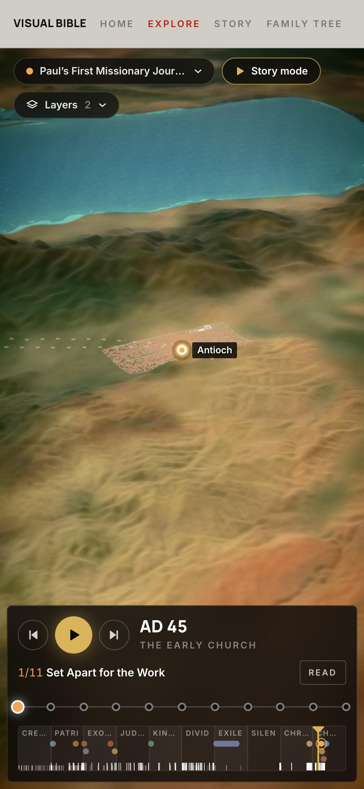

You’ve read
the story.
Now walk
into it.
One world · one timeline
Zoom from
the map…
CAMERA DISTANCE
5,350 km
…into
the land.
Trees, hills and water, streamed as you zoom.
Galilee
32.78° N · 35.47° E
Rebuilt from history
160+
cities
you can visit.
Antioch · AD 45
36.20° N · 36.16° E
AD 45
Drag the ages
Watch them
rise and fall.
Babylon · 560 BC
32.54° N · 44.42° E
13 journeys
Follow
the journeys.
Abraham
The Exodus
Jesus’ ministry
Paul’s voyages
Step by step · verse by verse
Build it
as written.

VISUAL BIBLE
תולדות
The biblical world, in 3D.
Explore free in your browser
Map · Cities · Journeys · Builds · Story mode
VISUAL BIBLE
תולדות